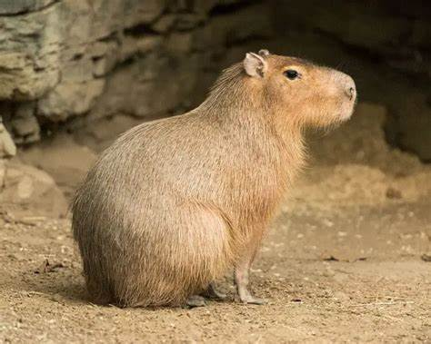

El capibara, también conocido como carpincho (Hydrochoerus hydrochaeris) es el roedor más grandes del mundo. Sin embargo, no parecen las típicas plagas que viven en los callejones. El capibara, o carpincho, tiene un tamaño similiar a la de un perro grande, tienen patas palmeadas y no tienen cola. Tampoco tienen la típica cara en forma de cuña de la mayoría de los roedores. Estos roedores se parecen mucho más a versiones más grandes de sus parientes cercanos, los conejillos de indias.
